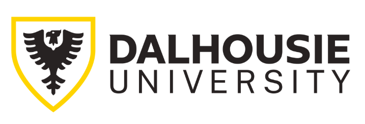

PhD in Mathematics (In Progress)
Dalhousie University, Halifax, CanadaSeptember 2023–August 2027 (Expected)My second PhD focuses on combinatorial commutative algebra, particularly free resolutions of powers of monomial ideals and their algebraic, combinatorial, and homological properties. I have completed the required coursework, comprehensive examinations, and research proposal requirements.
Supervisors: Professor Sara Faridi (Dalhousie University) and Professor Susan Cooper (University of Manitoba).
Supervisory Committee Members: Professor Jeannette Janssen and Professor Jason Brown (Dalhousie University).
PhD in Mathematics
Abdus Salam School of Mathematical Sciences, Government College University Lahore, PakistanOctober 2007–May 2012My doctoral research on smooth/impulsive linear systems extended classical linear time-invariant differential systems using algebraic methods involving modules over polynomial and rational function rings. It addressed axiomatic characterization, controllability, interconnections, equivalence, and duality.
Supervisor: Professor Vakhtang Lomadze.
MSc in Mathematics
Government College University Lahore, PakistanSeptember 2004–September 2006Graduate coursework included algebra, analysis, differential geometry, topology, functional analysis, mechanics, mathematical physics, numerical analysis, rings and modules, and algebraic topology.
Graduated first in my class; awarded the Gold Medal and a place on the Academic Roll of Honour.

BA (Mathematics concentration)
University of the Punjab, Lahore, PakistanAugust 2001–May 2003A two-year Bachelor of Arts degree with a strong concentration in mathematics, comprising 50% of the program marks. Coursework covered calculus, linear algebra, elementary group theory, vector and tensor analysis, mechanics, and metric spaces.
Minor: English.